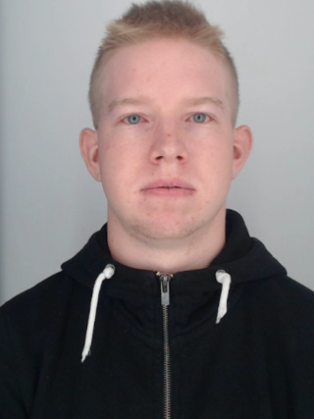

Sander Sooväli
Email: sander.soovali@gmail.com
LinkedIn ProfileHobbies and interests
In my free time, I enjoy going to the gym and traveling, as they allow me to stay active and experience new cultures and perspectives.
Additionally, I have a growing interest in international relations, which helps me understand how global events can change rapidly and to anticipate potential trends or shifts in the world.
About Me
My name is Sander Sooväli, and I am 25 years old. I am currently a second-year student at Tartu Vocational College, studying to become a Junior Software Developer.
My IT educational path started in 2021, when I started studying as a Technician Support Specialist in Tartu Vocational College. This was a one-year partial vocational program that gave me my first practical experience in IT support and systems.
In 2022, I continued my studies in the IT Systems Specialist program at the same school, where I developed a stronger foundation in computer systems, networks, and IT infrastructure.
Since 2024, I have been studying Software Development, focusing on programming, problem-solving, and building software solutions. This path has helped me grow step by step into the field of software development.
Previous Internship Experience
I completed a total of three internships at Tartu Health Care College during my studies in IT-related fields. These internships were carried out as part of the Technician Support Specialist and IT Systems Specialist programs.
During my internships, I gained hands-on experience in IT support, troubleshooting, and system maintenance. I provided technical support for students and staff, resolving hardware and software issues, assisted with network setup, and participated in basic server and system administration tasks.
Through my internships, I learned how to work in a real IT environment, gained experience with user support workflows, and improved my understanding of computer systems, networks, and basic server administration.
I have completed a web development internship at Register OÜ, where I developed and maintained WordPress plugins, implemented custom user interface logic with JavaScript, and worked with PHP-based backend functionality.
Skills
Web & Mobile Development: HTML, CSS, JavaScript, TypeScript, React Native, Tailwind CSS / NativeWind, WordPress.
Databases: MySQL.
Design & Graphics: Figma, Adobe Photoshop, Inkscape.
IT Infrastructure: Windows administration, networking, server maintenance, and hardware troubleshooting.
Check out my other code projects created during lessons